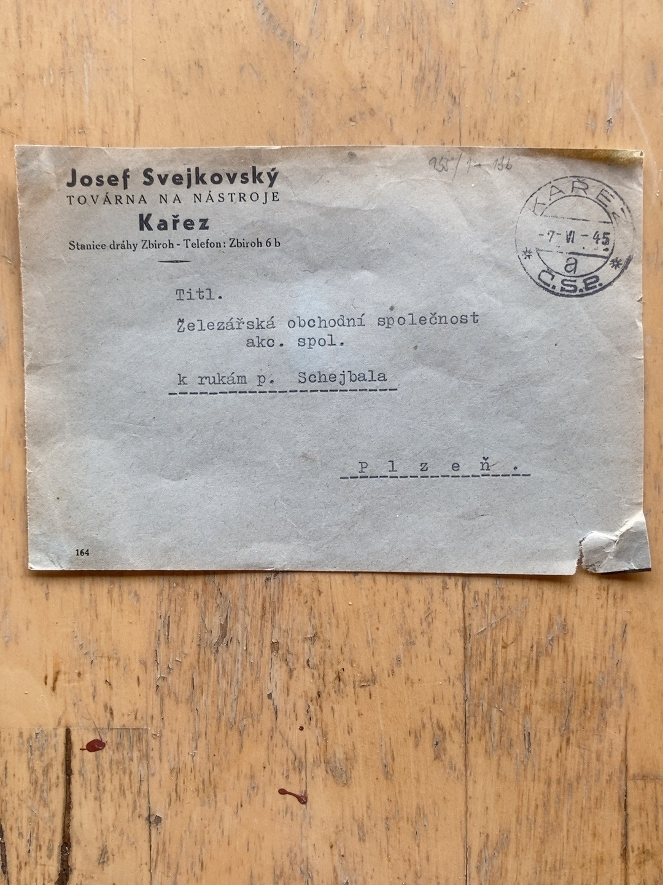

Primary evidence: 7 June 1945
{kind=link}

The printed letterhead reads: “Josef Svejkovský — Továrna na nástroje — Kařez” and gives Zbiroh railway station and telephone number Zbiroh 6 b. It was addressed to Železářská obchodní společnost, akc. spol., for the attention of Mr Schejbal, in Plzeň.
The date is historically significant. On 7 June 1945, only weeks after the end of the war in Europe, the Kařez factory was corresponding under Josef Svejkovský’s name and presenting Zbiroh station as its railway connection.
The envelope proves commercial identity and activity at that moment. It does not by itself establish who owned the factory during the occupation, when Svejkovský assumed control, or whether it was the legal successor to the Brandeis–Eisenschimmel enterprise.
Likely biographical match
The Czechoslovak Legionary Community records a Josef Svejkovský/Švejkovský, born in Zbiroh on 24 July 1892, domiciled in Zbiroh and Kařez, and employed as a nástrojař (toolmaker). He was captured in 1915 and entered the Czechoslovak Legions in 1917. The agreement of name, locality and occupation makes identification with the factory operator highly plausible, but a second identifying document is still required. View the legionary record.
An archival inventory for the Rokycany Tax Administration independently lists “Josef Svejkovský, výroba nástrojů, Kařez” under reference N 15, inventory no. 234. The underlying file is a priority research target. View the archival inventory.
What role did Svejkovský play?
As an experienced local toolmaker, Svejkovský would probably have possessed valuable knowledge of local workers, suppliers, machinery and transport. Such knowledge could have made him useful to private owners, occupation authorities, national administrators or the restored Czechoslovak state. Local expertise alone is not evidence of collaboration.
The working hypothesis is that Svejkovský may have operated, administered, acquired or restarted the Kařez tool factory during the wartime or immediate post-war transition. Determining which of these roles he held could explain the succession from the Brandeis factory to later nationalised organisations.
What could support it
- A wartime company-register entry naming him as owner, manager or administrator.
- Factory correspondence, payrolls, contracts or occupation-era production records.
- A transfer deed linking the Brandeis–Eisenschimmel assets to Svejkovský.
- The underlying 1948 district investigation file, if it concerns factory control or nationalisation.
What could disprove or revise it
- Evidence that he acquired or restarted the factory only after liberation.
- Records showing he operated a separate Kařez workshop unrelated to the Brandeis works.
- Evidence that another administrator controlled the factory throughout the occupation.
- A 1948 file concerning an unrelated matter or clearing him of an allegation.
Essential caution: an index entry for “Svejkovský Josef, Kařez — Tr. C 49/1948” proves only that a file existed. It does not reveal whether he was accused, a witness, cleared, or mentioned in another capacity. No claim of collaboration or wrongdoing should be made unless the underlying record supports it.
Research questions
- Was this factory the former Brandeis–Eisenschimmel works, part of it, or a separate enterprise?
- When did Svejkovský begin operating under his own name?
- What was manufactured in Kařez between 1939 and 1948?
- What happened to the machinery, designs, employees and property after nationalisation?
- Was there a later transfer to Zbirovia or another national enterprise?